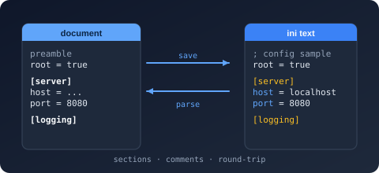

Namespace Bodu.Text.Ini.Reader

Purpose
Bodu.Text.Ini.Reader is the lowest tier of Bodu.Text.Ini and exposes two forward-only cursors over UTF-8 INI text. Utf8IniReader reports the file as authored — section headers, entries, and comments in source order, duplicates included — while IniDocumentReader walks the normalized object-of-objects shape (global keys hoisted, duplicate sections and keys resolved by the IniDocumentOptions policies) that the IniSerializer and both DOMs bind through.
Key types
- Utf8IniReader — the source-order
ref structlexer:Read,TokenType(a IniTokenType:SectionHeader,PropertyName,String,Comment),GetString,LineNumber, andBytesConsumed. - IniDocumentReader — the normalized cursor:
Read,TokenType(StartObject/EndObject/PropertyName/String),GetString, andCurrentDepth. - IniReaderOptions —
DisallowHashCommentsandSkipComments.
Example
using Bodu.Text.Ini;
using Bodu.Text.Ini.Reader;
var reader = new Utf8IniReader("; owned by ops\n[server]\nhost=localhost\n"u8);
while (reader.Read())
{
if (reader.TokenType == IniTokenType.SectionHeader)
Console.WriteLine($"[{reader.GetString()}] at line {reader.LineNumber}");
else if (reader.TokenType == IniTokenType.Comment)
Console.WriteLine($"comment: {reader.GetString()}");
}
Notes
- Choose the reader by intent. Use
Utf8IniReaderfor linting, comment handling, or faithful transcription; useIniDocumentReaderwhen you want the logical configuration shape with duplicates already merged. - Conservative dialect.
=is the only separator; values run literally to end of line;;and#start full-line comments only. - Malformed input throws IniFormatException.
- See also: the line-formats introduction and the INI guide (The two readers).
Structs
IniDocumentReader
Provides a forward-only cursor over the normalized token stream of a parsed INI document: a root object whose
properties are the hoisted global keys followed by the sections, each section an object of key/value entries. The
reader is a ref struct, so it cannot be boxed or captured.
IniReaderOptions
Provides configuration for a Utf8IniReader, controlling comment recognition.
Utf8IniReader
Provides a high-performance, forward-only, source-order reader for INI bytes. The reader is a
ref struct, so it lives on the stack and cannot be boxed or captured.